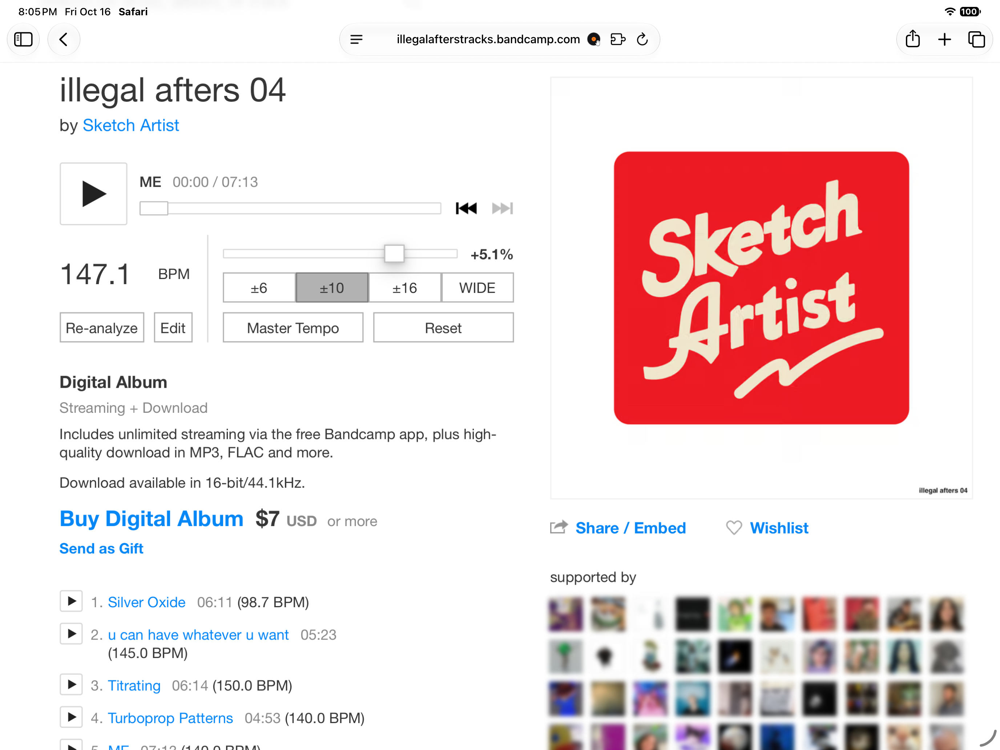

−16
−8
0
+8
+16
NOW
Tempo Adjust
· for Bandcamp & Discogs
Now available for desktop, iPad and
mobile
.
A pitch fader for Bandcamp and Discogs, in every browser you listen in.
Chrome
· Desktop
Firefox
· Desktop & Android
Safari
· iPhone, iPad & Mac
